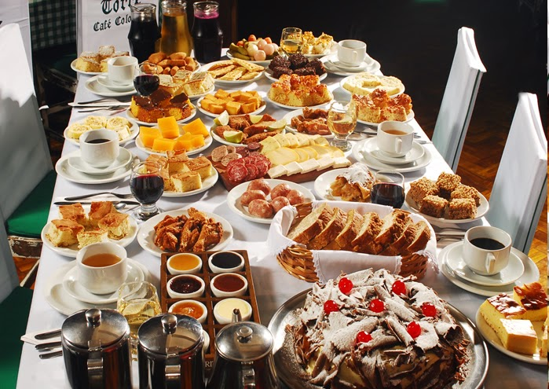
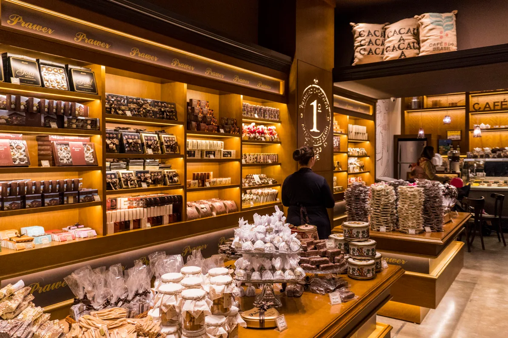

Gramado
Gramado, localizada na serra gaúcha, é uma das cidades mais turísticas e visitadas do Brasil, sendo famosa por sua arquitetura de estilo europeu, especialmente a alemã e a italiana, além de seu clima ameno, que atrai turistas durante todo o ano, principalmente no inverno. A cidade oferece uma combinação única de charme, natureza e atrações culturais que a tornam um destino popular tanto para brasileiros quanto para turistas internacionais.
Gramado se destaca por seu turismo focado em experiências familiares, desde atrações para crianças até os mais idosos, passando por passeios em parques, festivais de cinema, turismo de compras e a imersão em sua gastronomia e cultura. A cidade também é famosa por seus eventos internacionais, como o Festival de Cinema de Gramado e o Natal Luz, que atraem milhões de visitantes anualmente. A cidade proporciona uma verdadeira imersão na cultura europeia, especialmente através da culinária, arquitetura e paisagens, e é um dos destinos mais procurados para quem busca descanso, lazer e contato com a natureza.
Principais pontos turísticos
- Lago Negro
- Mini Mundo
- Parque do Caracol
- Igreja de São Pedro
- Rua Coberta
O Lago Negro é um dos principais pontos turísticos da cidade. Com suas águas escuras e rodeado por árvores, ele oferece um ambiente tranquilo e relaxante. O lago possui pedalinhos à disposição dos turistas, e ao redor há trilhas para caminhadas e áreas de piquenique.
O Lago Negro é ideal para passeios ao ar livre e um dos locais mais fotografados da cidade. Além disso, a vista e o ambiente ao redor proporcionam uma experiência imersiva em meio à natureza.

O Mini Mundo é um parque temático de maquetes que representa miniaturas perfeitas de prédios, casas e cenários famosos do mundo, incluindo algumas cidades europeias e brasileiras. A atenção aos detalhes das miniaturas e a tecnologia de construção fazem do Mini Mundo uma experiência única.
A atração é bastante popular entre famílias e crianças, sendo uma excelente opção para quem busca uma experiência educativa e divertida.
Embora tecnicamente em Canela, o Parque do Caracol é uma atração imperdível para quem visita Gramado. O parque é famoso pela belíssima Cascata do Caracol, uma queda d'água com 131 metros de altura. O parque também oferece trilhas, um teleférico e espaços para piquenique.
A Cascata do Caracol é um dos cartões-postais mais icônicos da região e o parque é um excelente destino para quem deseja conhecer a natureza exuberante da serra gaúcha.
A Igreja de São Pedro é uma das construções mais tradicionais de Gramado. Sua arquitetura em estilo gótico e o seu entorno com jardins e uma praça encantam os visitantes. A igreja também realiza celebrações religiosas e eventos culturais ao longo do ano.
A igreja é um dos pontos turísticos mais antigos e significativos de Gramado, ideal para quem deseja conhecer a história religiosa da cidade.
A Rua Coberta é um dos locais mais emblemáticos de Gramado. A rua, que é coberta por uma estrutura de vidro, abriga diversos bares, restaurantes e lojas, oferecendo um ambiente aconchegante e charmoso. Durante o Natal Luz, a Rua Coberta ganha iluminação especial, atraindo ainda mais visitantes.
É o local ideal para fazer compras, desfrutar de um bom prato e vivenciar a atmosfera de Gramado. A Rua Coberta é um ponto de encontro importante na cidade e oferece uma experiência gastronômica e cultural.
Principais pontos gastronômicos
- Churrascarias e Rodízios de Carne
- Café Colonial 
- Fondue
- Doces e Chocolates 
Gramado, com sua forte influência da cultura gaúcha, possui diversas churrascarias e restaurantes de rodízio de carne. Esses locais oferecem aos turistas uma experiência gastronômica típica, com carnes nobres servidas de forma farta e ao estilo tradicional dos gaúchos. O Churrascaria Garfo e Bombacha e o Churrasco na Brasa são dois dos mais renomados.
O churrasco gaúcho é uma das principais atrações culinárias de Gramado, proporcionando aos turistas a chance de saborear a deliciosa carne brasileira em um ambiente acolhedor e autêntico.
O Café Colonial é uma tradição em Gramado e uma das experiências gastronômicas mais procuradas pelos turistas. Esse tipo de refeição inclui uma grande variedade de pães, bolos, doces, queijos, frios, embutidos e bebidas típicas. Alguns restaurantes que oferecem o Café Colonial são o Café Colonial Bela Vista e o Café Colonial Casa do Fritz.
O Café Colonial é uma experiência completa de sabores e cultura local, sendo uma ótima maneira de conhecer mais da culinária de Gramado e da região sul do Brasil.
Como parte da influência europeia, principalmente da culinária suíça e francesa, o fondue é uma das especialidades gastronômicas mais procuradas em Gramado, especialmente durante o inverno. Restaurantes como o Château de La Fondue e o Le Chalet de La Fondue oferecem uma grande variedade de fondues, incluindo queijo, carne e chocolate.
O fondue é uma refeição tradicional da região e ideal para os dias frios de Gramado, sendo uma opção popular durante as temporadas de inverno.
Gramado também é famosa por sua produção de chocolates artesanais e doces típicos, como o pão de mel, biscoitos de natal e trufas de chocolate. A cidade tem várias lojas especializadas em chocolates, como a Caracol Chocolates e a Chocolates Lugano.
Para os amantes de doces, Gramado é um paraíso de chocolates finos e doces tradicionais, ideais para presentear ou simplesmente para degustar enquanto passeia pela cidade.
Principais pontos culturais
- Festival de Cinema de Gramado
- Localização: Centro de Gramado.
- Natal Luz
- Localização: Gramado, especialmente no Centro e na Rua Coberta.
- Museu de Cera Dreamland
- Localização: Bairro Planalto.
- Rua Torta
- Localização: Centro de Gramado.
O Festival de Cinema de Gramado é um dos maiores e mais prestigiados do Brasil, atraindo cineastas, artistas e público de todo o mundo. Durante o evento, são exibidos filmes nacionais e internacionais e realizadas premiações. O festival é uma vitrine para o cinema brasileiro e latino-americano.
Este festival é uma das atrações culturais mais importantes de Gramado, atraindo turistas interessados no cenário cinematográfico e na cultura audiovisual.

O Natal Luz de Gramado é um dos maiores eventos de natal do Brasil, oferecendo uma programação cheia de espetáculos, desfiles, shows de luzes, corais e apresentações teatrais. Durante o evento, a cidade se transforma com decorações natalinas exuberantes, sendo um espetáculo imperdível para quem visita Gramado durante a temporada de fim de ano.
O Natal Luz é a grande atração cultural de Gramado, atraindo turistas de todo o país e do mundo para vivenciar a magia do natal em uma cidade encantada.
O Museu de Cera Dreamland é uma atração única que reúne figuras de cera de celebridades do cinema, música, esportes e cultura pop. O museu tem um acervo diversificado que atrai turistas de todas as idades.
Este museu é uma excelente opção de lazer e cultura, ideal para quem gosta de exposições interativas e de personagens famosos.

A Rua Torta é uma atração inusitada e divertida de Gramado, famosa por seu trajeto curvado e arquitetura peculiar. A rua faz parte de um conjunto arquitetônico único que mistura a história com a diversão.
A Rua Torta é um ponto turístico encantador e um excelente lugar para passeios fotográficos e para quem deseja conhecer mais sobre a arquitetura e o charme de Gramado.